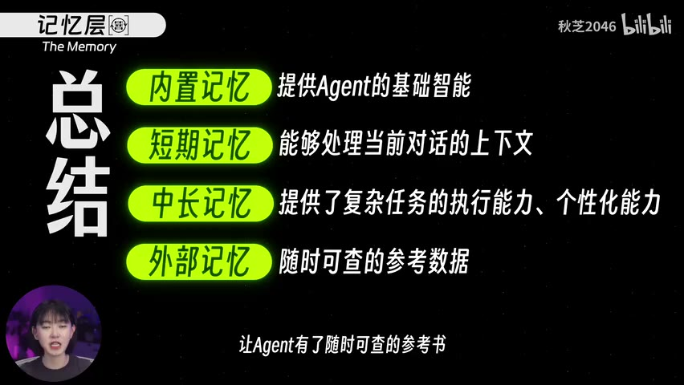

原视频 · 在线回看
点击后联网加载 B 站播放器；本地不下载整段视频。

原视频 · 在线回看
点击后联网加载 B 站播放器；本地不下载整段视频。
来源：Agent Infra到底是什么？【AI基建】
UP 主：秋芝2046 · 23 分 3 秒 · 深度阅读
链接：https://www.bilibili.com/video/BV1Rz4iz1Exz/
你在机场出口看到了多年未见的朋友，认出了对方，也想起你们的关系，于是决定走过去给她一个拥抱。这个决定很自然，但“想要拥抱”还没有完成拥抱。你得迈步、靠近、抬起手臂，身体不同部分还要配合起来。我们平常把这些看成一件事，拆开之后就能发现：理解情境、形成意图、安排动作和真正执行，各自承担了不同工作。
理解 Agent 也可以从这个比喻开始。模型根据输入形成回答或行动建议，系统还要把建议交给可以执行的程序，接收结果，再决定下一步。一个助手看起来会查资料、写文件、操作浏览器，背后需要的不只有模型。围绕它安排流程、保存信息、提供工具、控制风险的设施，合起来就是这里所说的 Agent Infra，也就是 Agent 的基础设施。
接下来使用六个层次帮助辨认这些工作：模型、调度、记忆、工具、运维与治理，以及多个执行者之间的协作。它是一个便于理解的分层视角，实际产品的模块可能合并或交叉，并不需要都照着六个盒子实现。我们先顺着“意图怎样成为行动”往下看，再逐渐补上长期工作需要的条件。
在机场的比喻里，大脑识别朋友，结合记忆理解情境，最后形成“走过去拥抱”的意图。对于语言模型，输入是它能够看到的文字或其他信息，输出可能是一段回答，也可能是结构化的动作请求。即使请求写得很明确，例如要调用哪一个工具、传什么参数，它仍然只是信息，需要其他程序接收并执行。
调度层承担接下来的连接工作，也常被称为编排层。它接到模型的动作请求，解析内容，找到相应执行能力，安排先后或依赖，并在获得结果后把信息交回模型。在拥抱的比喻中，需要先靠近对方，再抬起手臂；在数字任务中，可能要先获得搜索结果，再决定打开哪一个页面。具体顺序有时预先规定，有时由模型根据刚得到的结果继续选择。
这个区别能解释一个常见误会：模型回复“我将搜索资料”，并不代表搜索已经发生。调度程序必须真的调用搜索工具，拿到结果，再把结果提供给后续步骤。同样，模型说“文件已经保存”，也需要有写文件的实际执行及其返回结果。语言可以描述动作，基础设施需要让描述与发生的事情对应起来。
调度还要维持当前任务的状态。假如第一步已经找到资料，第二步正在整理内容，后续步骤就需要知道这些进展。如果每一步都从最初的用户问题重新开始，却没有此前结果，系统会重复工作，或者作出与前面不一致的选择。像 LangGraph、LlamaIndex、CrewAI 等工具可以参与流程组织，不过具体提供哪些能力，需要看它们各自的设计。理解调度的职责，比记住一串框架名称更有用。
模型与调度因此互相依赖。模型帮助决定现在该做什么，调度把决定送到正确位置，并让结果回到下一次判断中。一个聪明的模型，接在不可靠的交接流程上，也可能表现得混乱；一个组织清楚的流程，也需要模型或规则能够作出恰当判断。
回到机场的例子，你选择拥抱朋友，需要知道她是谁，以及你们过去是什么关系。Agent 的判断同样依赖它能获得的信息。但“记忆”这个词覆盖了几种不同机制，不能只因为助手回答得像记得，就假定信息都保存在同一个地方。
第一种是模型训练时形成的知识。模型学到语言、常识和许多领域关系，能够据此回答问题。这些知识体现在参数中，回答时仍然要经过计算生成，并不像打开某个文件直接复制一行记录。如果希望改变参数本身，需要相应的训练或更新机制。临时给模型看一份新资料，可以影响当前回答，却不等于资料已经永久写进参数。
第二种是当前会话里的上下文。连续对话时，应用通常会把相关历史连同新问题交给模型。模型因此知道前面在说什么，能继续处理“刚才那一点”。最直观的实现是每次带上完整历史，随着聊天变长，输入也会越来越长；实际系统还可能选择片段、做摘要或使用其他状态管理方式。因此，我们感受到的连续记忆，依赖应用怎样保存和提供会话信息。
上下文窗口就是一次请求能容纳信息的范围限制。除了用户的话，工具返回、系统规则和历史结果也可能占据空间。任务越长，保留所有细节的成本越高，也越容易碰到容量限制。此时不能只指望模型“记性更好”，还需要决定哪些内容当前最重要、哪些可以留在外部需要时再找。
第三种是面向当前任务的工作记忆。完成一些步骤后，可以把关键发现、中间结果和待处理事项保存在临时位置。后续步骤再读取这些内容，继续向前推进，而不用每次重读全部过程。工作记忆围绕这一次任务组织，任务结束后可以按需要归档或清理；它与模型训练形成的一般知识不同，也与每轮完整对话记录不同。
还有需要跨任务保存的长期信息，例如用户明确提供并允许使用的偏好。以后遇到相关任务，系统可以把适用的信息取出来，让服务更符合这个用户的需要。这里要分清保存和使用：信息被存进数据库，不表示模型当前一定看得到；系统还需要在合适时机找出它，避免使用已经过期或不相关的内容。长期记忆的管理也包括修改与遗忘。
假如一个公司有一万种商品，要根据这些商品的信息回答问题。商品资料既未必进入模型训练，也不可能都在当前聊天记录里。即便我们愿意把所有资料都交给模型，篇幅、更新和成本也会成为问题。这个场景更适合让系统先到资料库中寻找相关内容，再把找到的部分和用户问题一起交给模型。
这就是检索增强生成，也就是 RAG 的基本思路。资料库像一本可以随时翻阅的参考书：模型不必提前记住里面的每一项内容，系统在任务需要时找出相关材料。它也带来了新的要求，比如商品资料是否更新、问题能否检索到正确对象、返回的片段是否足以回答。外部信息可访问，只完成了第一步；找到并正确使用信息，仍然需要检索与理解配合。
| 信息类型 | 保存的主要内容 | 怎样进入一次判断 |
|---|---|---|
| 参数中的知识 | 训练形成的语言与知识关系 | 模型计算时使用 |
| 会话上下文 | 当前对话及相关工具结果 | 应用随请求提供 |
| 任务工作记忆 | 中间发现、进展与待办事项 | 后续步骤按需要读取 |
| 长期信息 | 经允许保存的偏好和可复用信息 | 遇到相关任务时取出 |
| 外部资料库 | 商品、文档等持续维护的材料 | 先检索，再把相关内容交给模型 |
这些类型在实际系统里可以共用存储组件，划分的重点是用途和更新方式。例如，一份数据库记录可以保存长期偏好，也可以保存任务进度，但取用时机和保留期限并不相同。看清这种差别，我们就更容易理解为什么“加一个数据库”并不能自动解决所有记忆问题。
它也解释了 Agent 为什么可能产生比普通问答更多的输入。每一步判断除了新问题，还可能需要历史、任务状态、检索结果和工具说明。成本来自一连串具体请求，不能只看用户最初输入了多少字。怎样选择和压缩上下文，因此同时影响理解质量、速度和费用。
知道该做什么以后，Agent 还需要能够采取行动。最容易理解的工具，是搜索、天气查询、计算器这一类单一接口。程序定义清楚输入和输出，模型提出调用，程序执行并返回结果。这样的接口范围相对明确，也容易针对单项功能做检查。
当可连接的服务越来越多，每个服务都单独定一套接入方式，会增加重复工作。MCP 提供一种描述和连接能力的协议，让应用更统一地发现并调用外部工具。统一协议可以减少一部分接入差异，但服务本身的认证、权限、错误和可用性仍然存在。接口形式相似，不代表它们处理的数据和允许的操作都相同。
更通用的工具则让 Agent 使用人原本使用的界面。通过浏览器，它可以阅读页面、填写表单；通过桌面或手机操作，它可以使用不同应用；通过终端与代码执行，它还可以编写小程序，完成原先没有专用接口的工作。能力范围逐渐变大，任务也不再被少数固定 API 完全限定。
通用能力同时带来环境问题。如果 Agent 直接操作你的日常电脑，它可能占用窗口、鼠标和浏览器，让你难以同时工作；安装依赖、准备工具也会花时间。更重要的是，这台电脑里还有与任务无关的私人文件和登录状态。把工作交给 Agent 之前，就需要考虑它能看到什么、能修改什么，以及它出错时会影响哪里。
因此，一种思路是为 Agent 准备独立工作空间。浏览器、代码环境或桌面放在单独的沙箱里，提前准备必要工具，让任务在自己的环境里运行。录制时讨论了 AgentBay、AgentCore、E2B 等云端服务作为这一方向的例子。它们的具体功能和配置会随版本变化，理解共同需求更重要：为 Agent 提供可运行、可限制、可持续使用的工作位置。
独立工作空间如果每次结束都完全消失，长期任务仍然很不方便。我们今天生成了几个文件，明天希望继续修改，就需要把这些文件保存下来。类似地，任务进行到哪里、还欠哪些步骤，也可能需要持久化。这里“持久化”指的是让信息在当前进程或会话结束后仍然存在，下一次能够重新取得。
保存工作文件与保存对话记忆有联系，也有区别。文件是任务的实际产物，任务状态记录已经做了什么，而模型下一轮仍然需要通过读取或上下文获得这些信息。仅仅在云盘里保留一个目录，并不能保证助手知道哪份文件是最新版本。顺畅的继续工作，需要运行环境、状态管理和模型输入相互配合。
工作环境还可以记录操作结果，供后续改进使用。不过，“记录了错误”和“模型以后不会再犯”之间还隔着具体机制。系统可能根据记录更新提示、保存经验，或把数据纳入后续训练；这些方式对行为的影响不同。不能仅凭环境保留了反馈，就推断模型参数已经自动改变。把训练、记忆和普通日志分开，才能理解某个产品所说的学习究竟发生在哪里。
云端环境的另一项潜力是并发。多个独立任务可以使用不同工作空间，同时执行，避免都等待同一台桌面。但实际能同时运行多少、是否值得并行，仍取决于资源配置、服务限制和任务依赖。并发能力是一种可提供的条件，无法直接等同于无成本、无限规模，或者所有任务都会更快。
工具越通用，运行过程中需要处理的事情也越多。运维关注系统能否持续工作：高负载时是否还能响应，某一步失败后怎样处理，哪些任务占用了大量资源，是否出现无意义的重复调用。如果这些问题没有安排好，一个短演示看起来顺利的 Agent，可能在长任务或多人同时使用时暴露困难。
治理则关心行为是否在授权和规则范围内。外部内容可能通过提示注入影响模型，工具可能接触敏感资料，多个系统之间的数据传递也可能扩大访问范围。我们需要明确谁可以发起任务、Agent 可以使用哪些身份和凭据、哪些操作需要确认，以及发生异常时能否追踪实际执行过程。给模型一条“注意安全”的要求，仍然需要执行层的权限和记录来配合。
本地和云端都有各自的条件。云服务可能提供成熟的身份管理、隔离与监测设施；本地运行则可以让某些数据保持在自己控制的环境里。与此同时，本地如果把整个电脑权限都交出去，同样可能不安全；云端如果权限、数据保存和访问安排不清楚，也不能只凭“云厂商”三个字就信任。环境位置本身无法替代具体的安全配置。
这一层和前面的工具层紧密相连。给 Agent 一台专用电脑，提供的是行动环境；限制它能访问的资源，记录它做过的事，处理错误和费用，才让这个环境适合持续使用。模型可以越来越能干，系统仍要对它造成的实际影响负责。
当一个 Agent 已经能完成一些工作，我们自然会想到让多个 Agent 分工。有人负责查资料，有人负责处理数据，再由另一个角色组织结果。不同应用甚至可能由不同团队管理，需要在系统之间发任务、交换进度和交付内容。这样的协作需要共同约定，否则每个执行者都完成了自己的局部目标，最后仍可能拼不成用户需要的结果。
这里把协作部分称作“社会层”，是一个帮助理解的比喻。人类用组织和协议安排分工，Agent 系统也需要定义角色、消息、任务状态与交付关系。像 A2A 这类面向 Agent 之间通信的协议，关注的是系统如何交流和协作；它与连接具体工具的协议承担的重点不同。协议能够让信息被理解和传递，但不能自动保证各方目标一致、结果可靠。
多方协作还会产生协调成本。任务是否适合拆开，子任务是否知道必要条件，结果由谁检查，失败如何通知，都需要具体设计。一个 Agent 能顺利完成的事情，增加多个角色未必会更好；当工作边界清楚、可以独立进行时，分工才更容易带来收益。把协作视为基础设施的一部分，也就意味着它需要像工具和记忆一样被认真安排。
这些设施逐渐完善后，可以想象一种交互方式：我们主要用自然语言提出目标，由 Agent 调用不同软件和工作环境完成具体操作。手机、音箱或其他设备都可以成为发起任务的入口，实际工作在背后的系统里继续。这是关于未来体验的一种设想，重点是入口与执行位置可以分开。
比如，你向家里的设备提出订票和继续昨天工作的请求，背后需要的远不止语音识别。系统要确认用户身份和具体需求，取得昨天的任务状态，调用合适服务，并在涉及费用或对外操作时遵守授权。越是看起来简单的一句话，背后越可能需要多层基础设施协同。这个设想不代表所有设备已经具备这样的完整能力，也不意味着传统界面会立即消失。
Agent 的体验来自整套系统。模型帮助理解和判断，调度让步骤相互衔接，记忆提供必要信息，工具把请求变成动作，运维与治理控制持续运行的风险，协作机制安排多个执行者之间的关系。
因此，当一个 Agent 做事不顺时，可以先回到发生问题的环节。它可能没有拿到正确资料，工具结果可能没被传回来，文件可能没有被保存，或者子任务丢失了重要条件。把这些具体问题看清楚，才能知道需要改进的是模型能力，还是围绕模型工作的设施。
模型说“我会查资料”以后，还需要发生哪些事情，搜索结果才会真正影响下一次回答？沿着模型、调度和工具把过程讲完整。
为什么把商品资料存进数据库，不等于模型已经学会了这些知识？参数、检索结果和当前上下文分别在哪里起作用？
如果一个长任务第二天无法继续，是缺少对话记录、工作文件，还是任务进度？把保存的对象分清楚，才知道要补哪种能力。